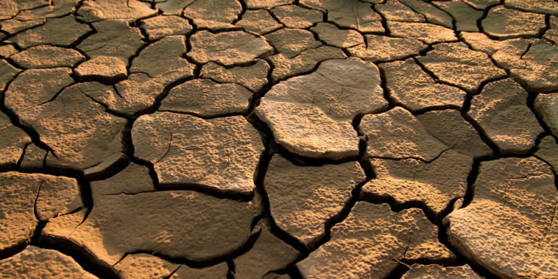

LA CONTAMINACIÓN AMBIENTAL:

Se entiende por contaminación ambiental cuando existe la presencia de sustancias nocivas en el agua, aire o suelo.
Las sustancias nocivas son lo que llamamos contaminantes ambientales, pudiendo tener diferente origen. Además, se
encuentran en diferentes concentraciones y en diferentes lugares.
Provincia Independencia
En la provincia Independencia, están en peligro sus montañas con sus bienes y servicios naturales.
los efectos del cambio climático y la deforestación son amenazas constantes. La deforestación tiene consecuencias
críticas para la provincia Independencia, ocasiona problemas de eroción de los suelos, afecta la
fuente de agua, provoca la disminución de los cauces de los ríos y perdida de la biodiversidad.
